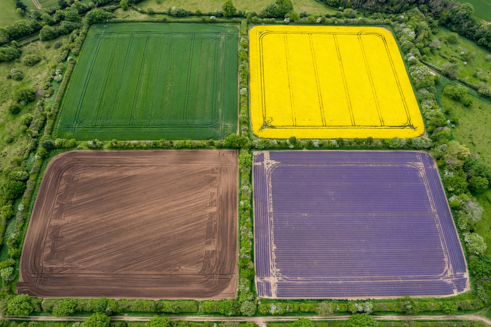

Crop rotation
Crop rotation is the practice of growing a series of different types of crops in the same area across a sequence of growing seasons. This practice reduces the reliance of crops on one set of nutrients, pest and weed pressure, along with the probability of developing resistant pests and weeds.
A well-designed rotation can also reduce the build-up of pathogens and pests that often occurs when one species is continuously cropped, and can improve soil structure and fertility by alternating deep-rooted and shallow-rooted plants. It is one component of polyculture.

History
Historical crop rotation methods are mentioned in Roman literature, and referred to by several civilizations in Asia and Europe. During the years of the British Agricultural Revolution, Charles "Turnip" Townshend popularised a four-course rotation system (wheat, turnips, barley and clover) developed in the Waasland region of present-day Belgium. The Norfolk four-course system became a mainstay of the revolution, demonstrating that rotation could raise yields dramatically compared with the older three-field system in which a third of the land lay fallow each year.
George Washington Carver promoted crop rotation methods in the United States South in the early 20th century, encouraging farmers to alternate cotton with legumes such as peanuts and soybeans to restore nitrogen to the soil.
Rationale
Growing the same crop in the same place for many years in a row, a practice known as monocropping, gradually depletes the soil of certain nutrients and selects for a highly competitive pest and weed community. Without balancing nutrient use, the condition of the soil decreases.
Nutrients
Different crops draw different nutrients from the soil and deposit different residues. Legumes such as soybeans, peas, and clover host symbiotic bacteria in root nodules that fix atmospheric nitrogen into a form plants can use, enriching the soil for subsequent crops such as maize or wheat.
Pests and diseases
Many pests and diseases are host-specific. Rotating away from a host crop starves out pathogens whose life cycles depend on that crop, reducing the need for pesticides. Crop rotation is also the oldest and most widely used method of reducing nematode populations.
Weeds
Integrating crops with differing life cycles and canopy structures disrupts weed growth and prevents the dominance of any one weed species. Conventional tillage is often compared against no-till approaches, but rotation itself remains a central tool of integrated weed management.
Planning
A rotation is often planned several years in advance. Important considerations include soil type, climate, market demand, and available labour. Plants within the same taxonomic family tend to have similar nutrient needs and share pests and diseases; an effective system tends to avoid growing closely related crops in quick succession.